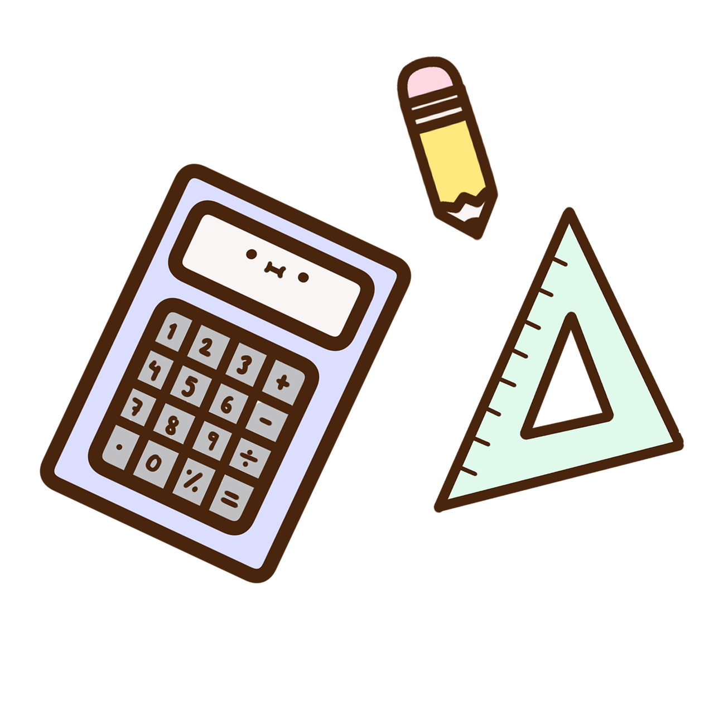
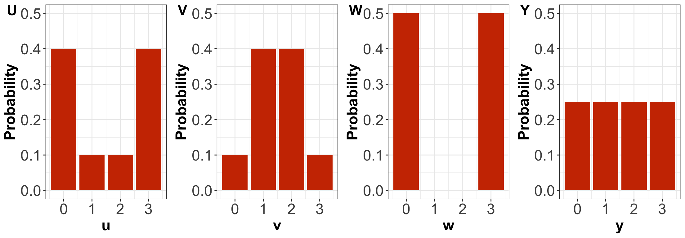
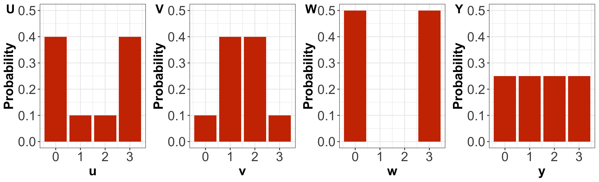
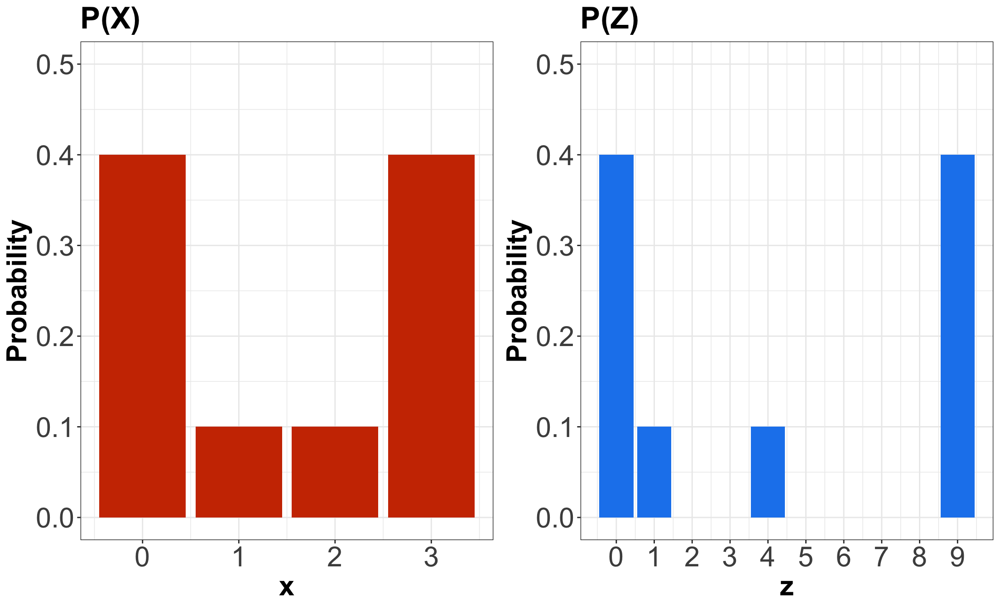
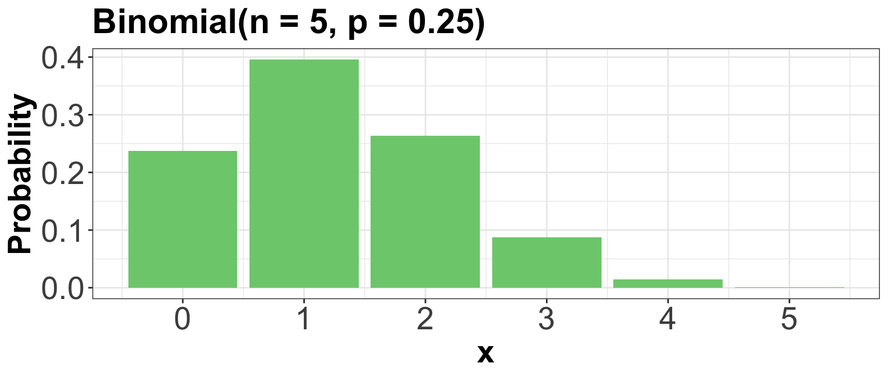

Outline
- Properties of Distributions
- Random Variable Transformations
- Distribution Families
- Another Common Discrete Distribution Families
1. Properties of Distributions
- We must start getting familiar with central tendency and uncertainty measures from
lecture1.
- Hence, let us practice their computations with some in-class iClicker.

1.1. A Single Probability Mass Function
- Suppose \(X\) is a discrete random variable denoting the following: \[X = \text{Number of crabs found at a nest in a Mexican beach.}\]
Probability Mass Function (PMF)
We plot it as a bar chart…
iClicker Question
Using the PMF for random variable \(X\), compute \(\mathbb{E}(X)\). Select the correct option:
A. 1
B. 1.5
C. 1.9
D. 6
iClicker Question
Using the PMF for random variable \(X\), compute the variance \(\text{Var}(X)\). Select the correct option:
A. 2.6
B. 1.85
C. 4.1
D. -1.85
iClicker Question
Using the PMF for random variable \(X\), obtain the mode \(\text{Mode}(X)\). Select the correct option:
A. 0
B. 3
C. Both 0 and 3
D. Neither
iClicker Question
Using the PMF for random variable \(X\), obtain the entropy \(H(X).\) Select the correct option:
A. -1.19
B. 0.52
C. -0.52
D. 1.19
1.2. Comparing Multiple Probability Mass Functions
Suppose there are four different random variables related to four Mexican beaches:
\[\begin{gather*}
U = \text{Number of crabs found at a nest at Acapulco} \\
V = \text{Number of crabs found at a nest at Cabo San Lucas} \\
W = \text{Number of crabs found at a nest at Cancún} \\
Y = \text{Number of crabs found at a nest at Puerto Vallarta.}
\end{gather*}\]
Probability Mass Functions (PMFs)
iClicker Question
Answer TRUE or FALSE:
By only looking at the PMFs, \(U\) has higher entropy than \(V\).
A. TRUE
B. FALSE

iClicker Question
Answer TRUE or FALSE:
By only looking at the PMFs, \(U\) has higher variance than \(V\).
A. TRUE
B. FALSE

iClicker Question
Answer TRUE or FALSE:
By only looking at the PMFs, \(W\) has the highest variance amongst the four distributions.
A. TRUE
B. FALSE

iClicker Question
Answer TRUE or FALSE:
By only looking at the PMFs, \(Y\) has the highest entropy amongst the four distributions.
A. TRUE
B. FALSE

Computing the Variance Using Crabs PMF for \(X\)
Method 1
\[\begin{align*}
\text{Var}(X) &= \mathbb{E}\{[X - \mathbb{E}(X)]^2\} \\
&= \mathbb{E}[(X - 1.5)^2] \qquad \qquad \text{since } \mathbb{E}(X) = 1.5 \\
&= (-1.5)^2(0.4) + (-0.5)^2(0.1) + (0.5)^2(0.1) + (1.5)^2(0.4) \\
&= 1.85.
\end{align*}\]
Now with the other approach…
Method 2
\[\begin{align*}
\text{Var}(X) &= \mathbb{E}(X^2) - [\mathbb{E}(X)]^2 \\
&= \mathbb{E}(X^2) - (1.5)^2 \qquad \qquad \text{since } \mathbb{E}(X) = 1.5 \\
&= (0)^2(0.4) + (1)^2(0.1) + (2)^2(0.1) + (3)^2(0.4) - (1.5)^2 \\
&= 1.85.
\end{align*}\]
2.2. Distribution Mapping
- Following up with the crabs PMF, let us focus the attention on \(\mathbb{E}(X^2)\).
- More specifically, what does \(X^2\) mean?
- It comes down to what we define in Statistics as a random variable transformation.
- We can rename \(X^2\) as \[Z = X^2.\]
Comparing PMFs

2.3. Expected Value Properties
- Expected values have certain useful properties.
- If \(a\) and \(b\) are constants, with \(X\) and \(Y\) as random variables, then we can obtain the expected value of the following expressions as:
\[\begin{gather*}
\mathbb{E}(a X) = a \mathbb{E}(X) \\
\mathbb{E}(X + Y) = \mathbb{E}(X) + \mathbb{E}(Y) \\
\mathbb{E}(aX + bY) = a\mathbb{E}(X) + b\mathbb{E}(Y).
\end{gather*}\]
Caution
- The operator \(\mathbb{E}(\cdot)\) does not follow the usual algebraic rules.
- For instance, if no further assumptions are made for random variables \(X\) and \(Y\), then \[\mathbb{E}(XY) \neq \mathbb{E}(X)\mathbb{E}(Y).\]
- Moreover, note the following: \[\mathbb{E}(X^2) \neq [\mathbb{E}(X)]^2.\]
2.3. Variance Properties
- If \(a\) and \(b\) are constants, with \(X\) and \(Y\) as independent random variables, then we can obtain the variance of the following expressions as:
\[\begin{gather*}
\text{Var}(a X) = a^2 \text{Var}(X) \\
\text{Var}(X + Y) = \text{Var}(X) + \text{Var}(Y) \\
\text{Var}(aX + bY) = a^2 \text{Var}(X) + b^2 \text{Var}(Y).
\end{gather*}\]
3. Distribution of Families
- A huge component of Data Science is to model data as random variables with uncertain outcomes.
- For instance:
- The number of ships that arrive at the port of Vancouver on a given day (i.e., a discrete and count random variable).
- A rock class (i.e., a discrete and categorical random variable).
3.1. Bernoulli

- Suppose you play a game and win with probability \(0 \leq p \leq 1\).
- Let \(X\) be the outcome of this game. It is a binary random variable as follows \[ X =
\begin{cases}
1 \; \; \; \; \text{if you win the game (success)},\\
0 \; \; \; \; \mbox{otherwise}.
\end{cases} \]
- The value \(1\) has a probability of \(p\), whereas the value \(0\) has a probability of \(1 - p\).
PMF
- A Bernoulli distribution is depicted as: \[X \sim \text{Bernoulli}(p).\]
- Its PMF is \[P(X = x \mid p) = p^x (1 - p)^{1 - x} \quad \text{for} \quad x = 0, 1.\]
Mean
\[\begin{align*}
\mathbb{E}(X) &= \sum_{x = 0}^1 x \cdot P(X = x \mid p) \\
&= \sum_{x = 0}^1 x \cdot p^x (1 - p)^{1 - x} \\
&= p.
\end{align*}\]
Variance
\[\begin{align*}
\text{Var}(X) &= \mathbb{E}(X^2) - [\mathbb{E}(X)]^2 \\
&= \mathbb{E}(X^2) - p^2 \qquad \qquad \text{since } \mathbb{E}(X) = p \\
&= \sum_{x = 0}^1 x^2 \cdot P(X = x \mid p) - p^2 \\
&= p(1 - p).
\end{align*}\]
3.2. Binomial

- Suppose you play a game, and win with probability \(0 \leq p \leq 1\).
- Let \(X\) be the number of games you win within \(n\) independent games in total.
- \(X\) is said to have a Binomial distribution, written as \[X \sim \text{Binomial} (n, p).\]
PMF
- A Binomial distribution is characterized by the PMF \[P \left( X = x \mid n, p \right) = {n \choose x} p^x (1 - p)^{n - x} \quad \text{for} \quad x = 0, 1, \dots, n.\]
- The above PMF has the following component: \[{n \choose x} = \frac{n!}{x!(n - x)!}.\]
Example
- Let us derive the probability of winning exactly two games out of five.
- I.e., \(P(X = 2)\) when \(n = 5\) and \(p = 0.25\): \[\begin{align*}
P(X = 2 \mid n = 5, p = 0.25) &= {5 \choose 2} (0.25)^2 (1 - 0.25)^{5 - 2} \\
&= \frac{5!}{2!(5 - 2)!} (0.25)^2 (1 - 0.25)^{5 - 2} \\
&= 0.26.
\end{align*}\]
Mean and Variance
\[\mathbb{E}(X) = n p\]
\[\text{Var}(X) = n p (1 - p).\]
3.3. Families Versus Distributions
- Specifying a value for both \(p\) and \(n\) results in a unique Binomial distribution.

- There are, in fact, infinite Binomial distributions.
3.4. Parameters
- Since \(p\) and \(n\) fully specify a Binomial distribution, we call them parameters of the Binomial family.
- We call the Binomial family a parametric family of distributions.

3.5. Parameterization
- Which variables we decide to use to identify a distribution within a family is called the family’s parameterization.
- Parameterization will depend on the information you can more easily obtain.
4. Another Common Discrete Distribution Families
- Aside from the Binomial family of distributions, many other families come up in data modelling.
- In practice, distribution families still act as useful approximations.
4.1. Geometric

- Suppose you play a game, and win with probability \(0 \leq p \leq 1\).
- Let \(X\) be the number of independent failures before the first independent success.
- \(X\) is said to have a Geometric distribution, written as \[X \sim \text{Geometric} (p).\]
PMF
- A Geometric distribution is characterized by the PMF \[P(X = x \mid p) = p (1 - p)^x \quad \text{for} \quad x = 0, 1, \dots\]
- Since there is only one parameter, this means that if you know the mean, you also know the variance!
- It has an infinite support.
Mean and Variance
\[\mathbb{E}(X) = \frac{1 - p}{p}\]
\[\text{Var}(X) = \frac{1 - p}{p^2}.\]
4.2. Negative Binomial (a.k.a. Pascal)

- Suppose you play a game, and win with probability \(0 \leq p \leq 1\).
- Let \(X\) be the number of independent losses at playing the game before experiencing \(k\) independent wins.
- \(X\) is said to have a Negative Binomial distribution, written as \[X \sim \text{Negative Binomial} (k, p).\]
PMF
- A Negative Binomial distribution is characterized by the PMF \[P(X = x \mid k, p) = {k - 1 + x \choose x} p^k (1 - p)^x \quad \text{for} \quad x = 0, 1, \dots\]
- It has two parameters: \(k\) and \(p\).
- The Geometric family results with \(k = 1\).
Mean and Variance
\[\mathbb{E}(X) = \frac{k(1 - p)}{p}\]
\[\text{Var}(X) = \frac{k(1 - p)}{p^2}.\]
4.3. Poisson
- Suppose customers independently arrive at a store at some average rate \(\lambda\).
- Then, the total number \(X\) of customers arriving after a pre-specified length of time follows a Poisson distribution: \[X \sim \text{Poisson} (\lambda).\]
PMF
- We can find other examples that are indicative of a Poisson process:
- The number of ships arriving at Vancouver port on a given day.
- The number of emails you receive on a given day.
- A Poisson distribution is characterized by the PMF \[P(X = x \mid \lambda) = \frac{\lambda^x \exp(-\lambda)}{x!} \quad \text{for} \quad x = 0, 1, \dots\]
Mean and Variance
\[\mathbb{E}(X) = \lambda\]
\[\text{Var}(X) = \lambda.\]
- A notable property of this family is that the mean is equal to the variance!
4.5. Finally, let us check this mindmap…
](https://mermaid.live/edit#pako:eNp1U9tu2zAM_RVBTw7gpr608QVDH9pie9owbNgQDH5RZDolZkmGLlkyI_8-OUrXbo35IEg8FA_JI42UqxZoTQXKVrChkYRopWz0TeKOaWQWyOQj5AuTrRJh_31CNj0swvERDddgIZwmq2vkSkYdM6RjV_Zp8QLdo2T6MBfaIocr-0u9ujDZOK4JGsKIcZyDMURp8m6jr-86hr3TcDz-Gz_Z4h60VK7vMXoBH5STdo7cGdDmAnMgBUNQBlZJrB9Aby7TolTCo9H_id6jNvZvB6yzcG5iTc5tXE74AZQAT8ijt6U9XwyJNtApDQT2A2gEyVFuJ6Bp7t6m_flcyQzrJ9gyizsgs_2sCexA2jO3nw0jHe6h9WPyre1YHwDVEYsCJsnMwPhlrT4rNMYrEaAHJS1Kp5yZk0q7HvRZqrDSmArQgmHrX_M4-Rpqn0BAQ2u_baFjrrcNbeTRhzJn1deD5LS22kFM3dD6p_6IbKuZoHXnxfXegUlaj3RP6zS7Wd7cplWySsukzPNkFdMDrbMqW2ZFlXtfucqKvDrG9LdSPkOyXBVZVqRJmme3VVkWRUyhRav0x_DhTv_uRPHjdGGq4_gH7PkJGw)